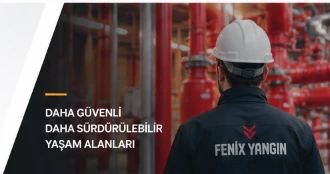

Yangın Söndürme Mühendisliği ve Projelendirme
Mahal riskinin tespitinden hidrolik hesaplamalara, mimari projelerden teknik şartnameye kadar uluslararası NFPA ve EN standartlarına tam uyumlu uçtan uca mühendislik çözümleri sunuyoruz.

Mühendislik ve Projelendirme Kapsamı
Fenix Yangın mühendislik departmanı, tesisinizin fiziki yapısını ve risk dinamiğini sahada inceleyerek projenin her aşamasını titizlikle modeller.
Mahal Keşfi ve Net Hacim Ölçümü
Asma tavan, yükseltilmiş taban, kablo geçişleri ve oda sızdırmazlık durumunun yerinde lazerle tespiti.
Yangın Risk Analizi ve Sınıflandırma
A, B ve C sınıfı yangın risklerinin tespiti, kritik ekipman değer analizi ve tehlike derecesinin belirlenmesi.
Ajan Seçimi ve Tasarım Konsantrasyonu
FM200, Novec 1230, CO2 ve aerosol sistemleri arasından çevre, insan ve ekipman uyumluluğuna göre optimum ajan seçimi.
Onaylı Hidrolik Boru ve Nozul Hesabı
VdS ve UL listeli yazılımlar kullanılarak boru sürtünme kayıpları, nozul orifis çapları ve 10 saniyelik boşaltma doğrulaması.
Basınç Tahliye Damperi Hesabı
Gaz boşalması anında oda yapısal bütünlüğünü korumak için gereken pozitif/negatif basınç tahliye alanı hesabı.
AutoCAD İmalat Çizimleri & Şartname
Borulama izometrisi, askılama detayları, algılama zonları ve resmi itfaiye onayına uygun teknik şartname dosyası.
Neden Fenix Yangın Mühendisliği?
Doğru tasarlanmamış bir yangın söndürme sistemi acil durumda çalışmayabilir veya yapıya zarar verebilir. Deneyimimiz güvenliğinizi teminat altına alır.
Teknik Uzmanlık & Yazılım
NFPA 2001 ve EN 15004 standartlarına uyumlu uluslararası onaylı hidrolik hesaplama yazılımlarıyla sıfır hata toleransı.
Deneyimli Mühendis Kadrosu
Binden fazla kritik tesis, veri merkezi ve endüstriyel tesiste onaylanmış projeler üreten kıdemli mühendislik ekibi.
Uçtan Uca Mühendislik
İlk keşif aşamasından imalat çizimlerine, şartnamelerden montaj ve test kabulüne kadar kesintisiz tek elden yönetim.
Mevzuat ve Standart Uyumu
Türkiye Yangından Korunma Yönetmeliği, TSE kriterleri ve uluslararası sigorta (FM Global) onaylarına tam uyum garantisi.
Süreç Nasıl İlerliyor?
Yangın söndürme mühendisliği hizmetimiz 6 temel disiplin aşamasından geçerek hatasız bir uygulama projesine dönüştürülür.
Keşif & Mahal Ölçümü
Uzman mühendislerimiz sahada mimari yapıyı, asma tavan ve döşeme boşluklarını, sızdırmazlık risklerini inceler ve lazer ölçümlerini kaydeder.
Yangın Risk Analizi
Korunacak hacimdeki yanıcı madde türleri, enerji yoğunluğu ve işletme sürekliliği kriterleri değerlendirilerek yangın sınıfı tayin edilir.
Sistem & Ajan Seçimi
Hacmin özelliklerine, insan varlığına ve çevresel faktörlere göre FM200, Novec 1230, CO2 veya pano içi söndürme sistemi belirlenir.
Hidrolik & Miktar Hesabı
Gerekli gaz miktarı ve boru çapları onaylı hidrolik yazılımlarla çözümlenir; 10 saniyelik boşalma süresi ve nozul basınçları simüle edilir.
Uygulama Projesi (CAD)
Boru güzergahları, silindir bataryası yerleşimi, nozul açıları ve çapraz zonlu algılama kablolaması ölçekli CAD çizimlerine dökülür.
Şartname & İmalat Onayı
İlgili idare, itfaiye ve yapı denetim onayına hazır teknik şartname, malzeme listesi ve montaj kılavuzu dosya halinde teslim edilir.
Hizmet Verdiğimiz Alanlar ve Sektörler
Mühendislik ve projelendirme hizmetlerimiz, yangın anında veri veya operasyon kaybına tahammülü olmayan kritik sektörlerde uygulanmaktadır.


Mühendisliğini Yaptığımız Söndürme Sistemleri
Fenix Yangın, tüm temiz gazlı ve mikro-hacim söndürme sistemleri için özel hidrolik hesaplama ve projelendirme altyapısına sahiptir.
FM200 Gazlı Söndürme
Elektronik cihazlara zarar vermeyen, kalıntı bırakmayan ve 10 saniyede alevi boğan standart temiz gaz sistemi.
Sistemi İncele ÇEVRECİ TEMİZ GAZ (FK-5-1-12)Novec 1230 Söndürme
Küresel ısınma potansiyeli sıfıra yakın, insanlı hacimlerde en yüksek güvenlik marjına sahip yeni nesil sıvı-gaz söndürme.
Sistemi İncele YÜKSEK BASINÇ / İNSANSIZ HACİMKarbondioksit (CO₂) Söndürme
Trafo, jeneratör ve yanıcı sıvı depolarında oksijeni hızla düşürerek derin yangınları söndüren endüstriyel çözüm.
Sistemi İncele MİKRO HACİM KORUMAPano İçi Söndürme
Elektrik ve otomasyon panolarının içerisine yerleştirilen algılayıcı polimer hortumla yangını kaynağında söndüren sistem.
Sistemi İncele ENDÜSTRİYEL MUTFAKDavlumbaz Söndürme
Otel ve restoran mutfaklarında yağ yangınlarını sabunlaşma (saponification) reaksiyonuyla anında boğan sistem.
Sistemi İncele BASINÇSIZ KONDENSED SİSTEMAerosol Yangın Söndürme
Borulama ve basınçlı silindir gerektirmeyen, potasyum bazlı mikro partiküllerle zincirleme yanma reaksiyonunu kıran teknoloji.
Sistemi İnceleProjeniz İçin Uzman Mühendislik Desteği Alın
Tesisinizin mimari planlarını gönderin, uzman kadromuz NFPA ve yangın yönetmeliğine uygun hidrolik hesap ve sistem tasarımını hazırlasın.
Sıkça Sorulan Sorular
Yangın söndürme projelendirme süreci ne kadar sürer?
Tesisin büyüklüğüne ve korunacak hacim sayısına bağlı olarak keşif ve veri toplama aşamasından sonra ortalama 3 ila 7 iş günü içerisinde hidrolik hesaplar ve CAD uygulama çizimleri tamamlanarak teknik onay dosyası sunulur.
Hidrolik hesap neden zorunludur?
Temiz gazlı söndürme sistemlerinde gazın yasal olarak 10 saniye içerisinde mahale homojen boşalması şarttır. Boru çapları, nozul delik çapları ve hat basınç dengesi yalnızca akredite hidrolik hesap yazılımlarıyla garanti edilebilir.
Mahalde asma tavan varsa hacme dahil edilir mi?
Evet. Asma tavan üstü veya yükseltilmiş döşeme altı alanlarda kablo tavaları ve yanıcı yük bulunuyorsa, bu hacimler korunacak toplam net hacme dahil edilir ve nozul yerleşimi bu hacimlere göre tasarlanır.
Basınç tahliye damperi (overpressure damper) hesabı neden gereklidir?
Gaz boşalması anında oda içerisinde ani bir pozitif basınç dalgası meydana gelir. Duvarların ve camların zarar görmemesi için fazla basıncı güvenle tahliye edecek otomatik damper kesit alanı mühendislik hesabıyla belirlenir.
Proje hazırlığında hangi uluslararası standartlar baz alınır?
Tasarımlarımız uluslararası NFPA 2001 (Clean Agent Systems), EN 15004, ISO 14520 standartları ile Türkiye Binaların Yangından Korunması Hakkında Yönetmelik hükümlerine tam uyumlu olarak hazırlanır.
İlgili Teknik İçerikler
Gazlı Söndürme Ajan Miktarı Hesabı Rehberi
NFPA 2001 ve ISO 14520 standartlarına göre hacim, sıcaklık ve konsantrasyon formülleri.
Makaleyi Oku SIZDIRMAZLIK TESTİDoor Fan (Oda Sızdırmazlık) Testi Kılavuzu
Gaz tutma süresinin (hold time) ölçülmesi ve sızdırmazlık kriterlerinin teknik detayları.
Makaleyi Oku STANDART ÖZETİNFPA 2001 Temiz Gazlı Söndürme Standardı
Sistem tasarımı, montaj toleransları ve güvenlik faktörlerinin standart gereksinimleri.
Makaleyi Oku